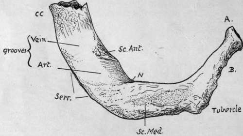

Costal Cartilages. Part 3
Description
This section is from the book "The Anatomy Of The Human Skeleton", by J. Ernest Frazer. Also available from Amazon: The anatomy of the human skeleton.
Costal Cartilages. Part 3
A brief examination shows that the upper and lower members of the series differ decidedly from the majority of ribs : the chief points of distinction are as follows :
First Rib
Articulates with one vertebra. Short, flat, and comparatively broad, presenting upper and lower surfaces with inner and outer margins, instead of the typical arrangement. Head rounded, with a single facet for the first dorsal body, neck elongated, tubercle pronounced, no angle. Upper surface marked by scalene muscles and structures passing between them to axillary sheath, showing from behind forwards a rough area for Scalenus medius in front of the tubercle, a groove for subclavian artery (or first dorsal nerve, or both), a scalene tubercle near inner margin for Scalenus anticus, and a shallow groove at anterior end for subclavian vein. The partly calcified shell of the costal cartilage is frequently attached to the bone, causing it to appear longer than usual. There is no subcostal groove. The whole bone is more or less in one plane, though the head and neck sometimes show a little downward curve- not upward, as in the lower bones.
Fig. 41.-Upper surface of left first rib. A. head ; 7?. neck ; CC. calcified costal cartilage : Serr. origin of Serratus magnus from outer border; N. groove made by first dorsal nerve.
Second Rib
Surfaces look more upward and downward than outward and inward : in fact, the bone has somewhat the appearance of a much elongated edition of a first rib. Head has two facets, the upper one very small. Said sometimes to have no angle, but this is not a true description of most bones : angle a short distance from tubercle. A prominent boss of bone about half-way round the outer side of shaft for origin of Serratus magnus. Subcostal groove very broad on hinder part of shaft. This rib also, like the first, lies more or less in one plane.
Tenth Rib
Head may have one or two facets, according to the individual articulation, with the tenth dorsal vertebra only, or with the ninth and tenth. Tubercle may have a definite though small articular facet, or this may be absent.
Eleventh And Twelfth Ribs
These do not articulate with transverse processes so they do not present tubercles: they are only carried by their corresponding vertebral bodies, so their heads have single facets. The eleventh rib is longer than the last, shows a definite angle, and has a trace of subcostal groove : the last rib has neither tubercle, groove, nor angle, and varies in length from i to 7 or 8 inches. Each of these ribs carries a free pointed short cartilage, embedded in the deeper layers of the abdominal wall
For the detailed examination of ribs and cartilages it will be well to take a middle rib and work out on it the various parts and markings, and then to follow the modifications of these that occur as one passes towards the ends of the series.
Examine first the vertebral end of such a rib (Fig. 42). Roughnesses are found round its articular surfaces for ligamentous bands connecting it with the vertebral bodies. These bands are best developed in front, where they form the " stellate " ligament : this is described as having upper, middle, and lower parts diverging to the two vertebral bodies and intervertebral disc which carry the rib-head, but the division is usually indistinct. The interarticular band is thin, separating the two articular cavities, and is probably derived from the upper fibres of the capsule, left in situ when the articular surface extends to the upper vertebra from the lower, to which it properly belongs.
Looking at the inner end of the bone from the front, it is found to present two areas at its vertebral end, the lower of which (P) is pleural and directly continuous with the pleural surface of the shaft : the upper area (X) is confined to the neck and shaft between the neck and angle, and is separated by a soft fatty tissue from the membrane which supports the pleura. The intercostal vessels and nerve run through this tissue in front of the upper costo-transverse ligament (the nerve is shown in the figure), but do not come into contact with the bone until they get near the angle. The depth of X depends on the growth of the Crista colli superior. The " endothoracic fascia," the membrane supporting the pleura, is attached a'ong the hne A separating the two areas and to the lower border of the rib above (AA in Fig. 42, C).
* I am aware that this is not the usual description, but it appears to me to accord more truly with what is found on dissection.
These two areas are usually apparent on the bone, but the finger will at any rate detect them at once : the line between them can be traced out to become continuous with the line of attachment of the Internal Intercostal muscle.
The membrane can therefore be looked on as continuing the plane of the Internal Intercostal, and it contains on its deep aspect some aponeurotic fibres continuous with those of the muscle so that in this sense it may be termed the posterior intercostal membrane *-just as the anterior membrane continues the plane of the External Intercostal in front.
The lower border of this part of the bone is a prominent bar that strengthens the curve of the neck, and is continued into the inner hp of the groove on the shaft, to which the Internal Intercostal is attached.
Behind this prominent rim, the under surface of the neck and neighbouring shaft has a broad groove (XX) which corresponds with the surface X on the upper part of the rib, and is in relation with the same soft fatty tissue : it is bounded behind by the plane of the middle costo-transverse hgament (MCT) and capsule of the costo-transverse articulation. Like the upper area X, this lower groove depends for its breadth and depth on the development of the Crista--in this case the Crista inferior-that bounds it behind. The Crista superior affords attachment to the upper costo-transverse hgament, of which the more oblique anterior fibres reach the top of the crest and the less oblique posterior ones extend somewhat on to the posterior surface. The External Intercostal is continued as an aponeurotic layer along the dotted line B to the hgament. The markings for all these structures are apparent on the bone.
On the back of the neck there is a rough ligamentous area in the lower part (MCT) for the middle costo-transverse ligament, extending down to the lower border and out to the costo-transverse capsule. Between this marking and that for the upper ligament the bone is in its " natural state," and hes in front of the inter-transverse tissues without affording attachment to them.
On the posterior surface of the shaft, between the angle and the tubercle, it is possible to distinguish three areas of markings on the bone. The upper E is for the External Intercostal, as is also the lower and larger one EE, while the intermediate district LC is for the Levator costae ; these muscles are shown in situ in the lowest drawing, which exhibits their relations to each other and neighbouring structures. E, frequently an even more narrowed area than in the bone figured, is continued out along the top margin of the shaft and inwards into the hne B, while EE reaches the tubercle internally and the lower margin of the bone externally. LC is a well-marked part that extends in above the non-articular tubercle, but externally it does not reach the angle, and the smooth piece of bone left in this way is covered by fibres of Acces-sorius, which, with Ilio-costalis and the vertebral aponeurosis, is attached to the bone at the angle and makes the secondary hnes here. Tendinous slips of Longissimus reach the bone between LC and EE, usually only in the middle six or seven ribs.
Continue to: